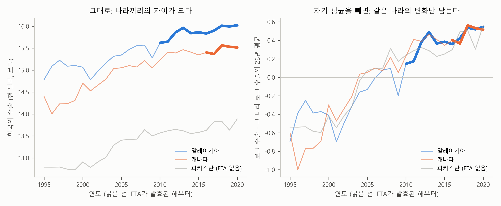

3. 어제의 나와 비교하기 — 고정효과#
이 장 첫머리의 보고서는 요약의 둘째 줄에 이렇게 적었습니다.
같은 나라를 FTA 전과 후로 비교하면(고정효과) 그 차이는 13%로 줄고, 0과 통계적으로 구별되지 않는다.
앞 절에서 2019년 횡단면의 75%와 합동 OLS의 42%가 “원래 한국의 수출이 많던 나라”였다는 사실 때문에 부풀려져 있다는 것을 보았습니다. GDP와 거리로 설명되지 않는 원래 수출 규모는 자료에 보이지 않지만, 나라마다 정해져 있어 해가 바뀌어도 거의 그대로라고 볼 수 있습니다. 이렇게 나라마다 고정되어 있어 해가 바뀌어도 그대로인 몫을 그 나라의 고정효과(fixed effects)라고 부릅니다. 고정효과에는 이 몫만이 아니라, 거리나 언어처럼 나라마다 정해진 것이 모두 함께 들어 있습니다. “고정”이라는 이름이 바로 여기서 왔습니다.
아이로 말하면 어떨까요? 키는 해마다 자라지만, 1학년 때 또래보다 큰 아이는 6학년 때도 대개 또래보다 큰 편입니다. 민준이를 해마다 재어 또래 평균과 비교하면, 차이가 어느 해에는 3cm, 어느 해에는 7cm로 들쭉날쭉할 것입니다. 그래도 그 들쭉날쭉 밑에는 민준이를 늘 따라다니는 몫이 깔려 있습니다. 이 몫을 또래보다 큰 정도라고 부르겠습니다. 앞 절의 원래 키를, 키가 해마다 자라도 쓸 수 있게 고친 말입니다. 해마다 잴 수 있는 것은 그해 또래와의 차이 전체이고, 그 가운데 얼마가 또래보다 큰 정도인지는 어느 해의 측정값에도 적혀 있지 않습니다. 그래도 해가 바뀌어도 그대로인 몫이니, 또래보다 큰 정도가 민준이의 고정효과입니다. 무역 자료의 원래 수출 규모도 자료에 보이지 않고, 해가 바뀌어도 그대로인 몫입니다.
그러니 FTA가 수출을 얼마나 늘렸는지 제대로 보려면, 먼저 이 고정효과를 떼어 놓고 보아야 합니다. 이 절은 그 방법을 다룹니다. 미리 답부터 말하면, 방법의 핵심은 각 나라를 다른 나라와 비교하지 않고 그 나라 자신의 다른 해와 비교하는 것입니다. 같은 나라끼리 비교하면 그 나라의 고정효과는 비교하는 양쪽에 똑같이 들어 있으므로, 고정효과가 얼마인지 몰라도 고정효과가 FTA의 효과를 부풀리는 것을 막을 수 있습니다. 앞 절 끝에서 본, 농구부에 들어가기 전과 후의 민준이를 비교하는 것이 바로 이 생각입니다. “남과 비교하지 말고 어제의 나와 비교하라”는 말 그대로입니다. 이렇게 고정효과를 떼어 놓고 추정하는 모형을 고정효과 모형이라고 부르고, 보고서의 추정 결과 표 맨 오른쪽 열이 그 결과입니다. FTA의 계수는 0.121, 즉 13%입니다.
가령 FTA를 맺은 말레이시아와 맺지 않은 파키스탄, 두 나라만 있다고 생각해 봅시다. FTA의 효과를 알아보려고 그림 3-1의 왼쪽 패널처럼 FTA를 맺은 뒤의 말레이시아에서 파키스탄을 빼 보면, FTA 효과뿐만 아니라 두 나라의 원래 수출 규모의 차이가 함께 남습니다. 이와 달리 오른쪽 패널처럼 말레이시아를 FTA를 맺기 전의 말레이시아 자신과 비교하면, 말레이시아의 고정효과(거리나 원래 수출 규모처럼 나라마다 정해진 몫)가 양쪽에 똑같이 들어 있으니 빼고 나면 FTA 효과만 남습니다. 실제 자료에서는 그사이 상대국 GDP 같은 다른 것도 달라지므로, 회귀식은 그것을 같게 맞춘 뒤에 이 비교를 합니다.
그림 3-1. 두 가지 비교. 왼쪽: 나라끼리 비교(FTA 후의 말레이시아 − 파키스탄). 오른쪽: 같은 나라의 FTA 전과 후를 비교(FTA 후의 말레이시아 − FTA 전의 말레이시아).
자기 평균 빼기#
고정효과를 떼어 내는 첫째 방법은 자기 평균 빼기입니다. 시점이 둘뿐이라면 비교는 간단합니다. 뒤의 값에서 앞의 값을 빼면 됩니다. 이렇게 같은 대상의 두 시점 값을 빼는 것을 차분(differencing)이라고 합니다. 그런데 이 장의 자료처럼 시점이 26개라면, 어느 해에서 어느 해를 뺄지 정하기가 애매합니다. 그래서 더 일반적인 방법을 씁니다. 각 나라에서 그 나라의 26년 평균을 빼는 것입니다.[1]
평균을 빼면 무슨 일이 일어날까요? 그림 3-2가 세 나라로 그것을 보여 줍니다. 말레이시아, 캐나다, 파키스탄입니다. 말레이시아는 한-아세안 FTA로 2010년부터, 캐나다는 2016년부터 이 자료에서 FTA 변수가 1입니다. 파키스탄은 2020년까지 한국과 FTA를 맺지 않았습니다. 그림에서 FTA 변수가 1인 해, 즉 FTA를 맺은 뒤의 해들은 굵은 선으로, 그 밖의 해는 가는 선으로 그렸습니다. 세 나라 모두 26년 동안 한국의 수출이 꾸준히 늘었고, FTA를 맺은 두 나라는 원래부터 한국과의 교역이 상대적으로 많던 나라, 파키스탄은 원래 적던 나라입니다.

그림 3-2. 한국의 수출(로그), 세 나라. 왼쪽: 그대로. 오른쪽: 나라마다 자기 26년 평균을 뺀 것. 굵은 선은 FTA가 발효된 해부터(말레이시아 2010년, 캐나다 2016년, 파키스탄은 FTA가 없다).
그림의 왼쪽 패널에서는 나라 사이의 높이 차이가 먼저 눈에 들어옵니다. 말레이시아로의 수출은 늘 맨 위에 있고, 파키스탄으로의 수출은 늘 맨 아래에 있습니다. 이 높이의 차이가 나라마다 정해진 몫, 즉 고정효과의 차이입니다. 여기에는 경제 규모와 거리, 그리고 GDP와 거리로 설명되지 않는 원래 수출 규모까지 모두 들어 있습니다. 한편 각 선에서 해마다 오르내리는 것은 한 나라 안에서 일어난 변화입니다.
이렇게 패널 데이터의 값에는 두 가지 차이가 들어 있습니다. 하나는 나라와 나라 사이에 수출이 얼마나 다른가이고, 다른 하나는 한 나라 안에서 수출이 해마다 얼마나 달라지는가입니다. 통계학 교과서는 앞의 것을 between variation, 뒤의 것을 within variation이라고 부릅니다. 이 책에서는 이 장의 자료에 맞춰 나라끼리의 차이와 같은 나라의 변화라고 부르겠습니다. 반 아이들로 말하면, 같은 학년에서도 민준이는 크고 서연이는 작은 것이 아이들끼리의 차이이고, 민준이가 1학년 때보다 6학년 때 30cm 더 큰 것이 같은 아이의 변화입니다. 두 차이는 변수마다 따로 계산합니다. 어떤 변수든 나라끼리의 차이는 그 변수의 나라마다의 평균이 서로 얼마나 다른가이고, 같은 나라의 변화는 해마다의 값이 그 나라의 평균에서 얼마나 벗어나는가입니다. 그래서 같은 자료에서도 변수마다 두 차이의 비율이 다릅니다.
이 장의 자료 전체에서 두 차이의 크기를 계산해 보면 한쪽으로 크게 기웁니다. 한국의 수출(로그)이 나라와 해에 따라 다른 정도(값마다 전체 평균에서 벗어난 정도를 제곱해 모은 뒤, 나라끼리의 몫과, 같은 나라 안의 몫으로 나눈 비율) 가운데 90%가 나라끼리의 차이이고, 같은 나라의 변화는 10%뿐입니다. 한국이 중국에 수출하는 금액과 몰디브에 수출하는 금액의 차이가, 중국으로의 수출이 26년 동안 늘어난 정도보다 훨씬 크다는 뜻입니다. 여기에서 분석하고 있는 무역 자료에 담긴 차이는 거의 대부분 “누가 큰가”에 관한 것이고, “누가 많이 컸나”에 관한 것은 일부입니다.
반면 0 또는 1의 값을 갖는 FTA 변수는 다릅니다. 이 변수는 54개국에서 어느 해에 0에서 1로 바뀌었으니, 같은 방식으로 나눠 보면 같은 나라의 변화가 67%를 차지하고 나라끼리의 차이는 33%입니다. FTA의 이런 성질은 이 절 끝의 “고정효과의 대가”에서 다시 중요해집니다.
참고: 두 차이를 식으로 쓰면 이렇습니다. \(x\)는 어떤 변수이고, \(\bar{x}_i\)는 그 변수의 나라 \(i\)의 평균, \(\bar{x}\)는 전체 평균입니다.
\[x_{it} - \bar{x} = \underbrace{(\bar{x}_i - \bar{x})}_{\text{나라끼리의 차이}} + \underbrace{(x_{it} - \bar{x}_i)}_{\text{같은 나라의 변화}}\]관측값 하나(어느 나라의 어느 해)가 전체 평균에서 벗어난 정도(\(x_{it} - \bar{x}\))는 항상 우변 두 항의 합입니다. 앞 항은 그 나라의 평균이 전체 평균에서 벗어난 정도로, 앞에서 나라끼리의 차이라고 부른 것입니다. 같은 나라라면 해가 바뀌어도 늘 같습니다. 뒤 항은 그해 값이 그 나라의 평균에서 벗어난 정도로, 같은 나라의 변화라고 부른 것입니다. 고정효과가 쓰는 것은 이 뒤 항입니다. 모든 관측에 대해 두 항을 각각 제곱해 더하면, 위 식의 성질상 전체가 정확히 둘로 나뉩니다. 앞에서 본 한국의 수출(로그)의 90%와 FTA 변수의 33%는, 각 변수에서 이렇게 나눈 전체 가운데 나라끼리의 차이가 차지하는 몫입니다.
한편, 그림 3-2의 오른쪽 패널은 나라마다 자기 평균을 뺀 것입니다. 그림에서 보듯이 세 나라의 선이 모두 0 근처로 내려와 겹칩니다. 말레이시아는 늘 위에, 파키스탄은 늘 아래에 있던 높이의 차이가 사라졌습니다. 나라마다 정해진 것은 그 나라의 평균에 이미 들어 있으니, 평균을 빼면 그 몫도 함께 빠지기 때문입니다. 그 몫이 나라마다 얼마인지는 따로 알 필요가 없습니다. 자기 평균이 그 나라의 기준선 구실을 하는 셈입니다. 이 평균에는 FTA를 맺은 다음의 해들도 들어 있지만 괜찮습니다. 기준선을 어디에 긋든 FTA 전과 후의 해들은 같은 선에서 측정되니, 둘의 차이는 그대로이기 때문입니다.
그러고 나면 오른쪽 패널에 남은 것은 각 나라가 자기 평균에서 해마다 얼마나 벗어났는지, 즉 같은 나라의 변화뿐입니다. 나라끼리의 차이는 버리고 같은 나라의 변화만 남긴 것이죠. 실제로 세 선의 평균은 모두 0입니다. 평균의 높이가 같아졌다는 것은 나라끼리의 차이가 사라졌다는 뜻입니다. 이제 FTA를 맺은 뒤(굵은 선)와 그 앞(가는 선)을 같은 나라 안에서 비교할 수 있습니다.
그러면 두 패널에서 FTA의 효과를 각각 읽어 봅시다. 왼쪽 패널처럼 나라끼리 비교하면 답이 엉뚱해집니다. FTA를 맺은 뒤의 해들(굵은 선)이 FTA가 없는 파키스탄보다 훨씬 위에 있으니 FTA의 효과가 아주 커 보입니다. 하지만 두 나라는 FTA를 맺기 훨씬 전인 1995년부터 이미 파키스탄보다 한참 위에 있었습니다. 원래 한국과 교역이 많던 나라가 FTA도 맺은 것이죠. 왼쪽 패널의 높이 차이가 주로 보여 주는 것은 FTA가 아니라 나라마다 원래 정해진 차이, 즉 고정효과이기 때문입니다. 횡단면의 75%와 합동 OLS의 42%가 바로 이런 나라끼리의 비교에서 나온 숫자입니다.
오른쪽 패널에서는 높이 차이가 사라졌으니, 각 나라를 FTA를 맺기 전의 자기 자신과 비교하게 됩니다. 말레이시아(2010년)와 캐나다(2016년)의 굵은 선, 즉 FTA를 맺은 뒤의 해들은 자기 평균보다 위에 있습니다. 이렇게 같은 나라의 FTA 전과 후를 비교한 것을 206개국에 걸쳐 모으고, GDP는 같게 맞춰 계산한 것이, 보고서에서 고정효과 모형으로 추정한 FTA의 효과 13%입니다.
그런데 오른쪽 패널에서 눈여겨볼 것이 하나 더 있습니다. FTA를 맺지 않은 파키스탄으로의 수출도 같은 시기에 함께 늘어, 뒤쪽 해에는 역시 자기 평균보다 위에 있습니다. 세 선이 거의 겹쳐서 함께 올라가는 것이죠. 같은 나라의 변화 가운데에도 일부는 FTA 덕분이 아니라, 모든 나라에 함께 일어난 변화 때문이라는 뜻입니다. 이 문제는 이 장의 마지막 절에서 다룹니다.
나라마다 자기 높이 — 고정효과와 더미#
고정효과를 떼어 내는 두 번째 방법은 다중회귀분석 장에서 소개한 더미 변수(해당하면 1, 아니면 0인 변수)를 쓰는 것입니다.
나라마다 더미를 하나씩 달면, 회귀식이 나라마다 자기 높이를 따로 정합니다. 말레이시아의 높이는 높게, 파키스탄의 높이는 낮게 정해지고, 그 높이에 나라마다 정해진 것들(GDP와 거리로 설명되지 않는 원래 수출 규모를 포함해)이 담깁니다. 그림 3-2의 왼쪽 패널에서 나라마다의 선의 높이(절편)를 회귀식이 따로 잡아 주는 셈입니다. 그러고 나면 FTA의 계수는 높이를 뺀 나머지, 즉 같은 나라의 변화로만 정해집니다. 자기 평균을 뺀 오른쪽 패널과 같은 일입니다. 실제로 둘은 수학적으로 늘 같은 계수를 냅니다. 더미가 나라마다의 높이를 맞춰 주는 것과, 나라마다 평균을 빼서 높이를 0으로 맞추는 것은 같은 일이기 때문입니다.
이렇게 더미 변수를 이용해 대상마다의 고정효과를 대상별 높이(절편)로 따로 잡아 두어도 됩니다. 더미로 하든 자기 평균 빼기로 하든, 같은 고정효과 모형의 두 가지 계산법입니다.
이 식에서 절편 \(a\)에 나라별 꼬리표 \(i\)가 붙어 있는 것이 고정효과입니다. 나라마다 자기 높이 \(a_i\)를 갖는다는 뜻이죠. 이 식에 거리가 없는 것도 그래서입니다. 거리처럼 나라마다 정해진 것은 모두 \(a_i\)에 담기고, GDP와 거리로 설명되지 않는 원래 수출 규모도 여기에 담깁니다. 민준이로 말하면 또래보다 큰 정도가 \(a_i\)입니다. 교과서에서는 \(a_i\)를 개체 효과(individual effect)라고도 부릅니다. 이 장의 자료로 나라 더미 205개(206개국에서 기준 하나를 뺀 것)를 넣어 회귀분석하든, 나라마다 자기 평균을 빼서 회귀분석하든, FTA의 계수는 똑같이 0.121이 나옵니다.
75%가 13%로#
이제 보고서의 숫자로 돌아옵니다. 표 3-1는 보고서의 표에서 고정효과 열을 옮긴 것입니다.
표 3-1. 고정효과 모형의 추정 결과 (종속변수: 로그 수출)
계수 |
표준오차 |
\(p\)값 |
|
|---|---|---|---|
로그(상대국 GDP) |
1.056 |
0.047 |
< 0.001 |
로그(거리) |
— |
||
FTA |
0.121 |
0.087 |
0.16 |
같은 나라 안의 \(R^2\) |
0.414 |
||
관측 수 |
4,909 |
||
나라 수 |
206 |
주: 표준오차는 나라 단위 군집 표준오차. 나라마다의 절편(고정효과) 결과 206개는 생략. 같은 나라 안의 \(R^2\)은 나라마다 자기 평균을 뺀 값, 즉 같은 나라의 변화 가운데 회귀식이 설명한 비율이다(보고서의 표에서는 생략됨).
표에서 보듯이 고정효과 모형에서 FTA의 계수는 0.121, \(e^{0.121}\) ≈ 1.13배이니 퍼센트로 바꾸면 13%입니다. 같은 나라를 FTA 전과 후로 비교했을 때, GDP가 같다면 FTA 이후의 수출이 평균 13% 많았다는 뜻입니다. 횡단면의 75%에서 크게 줄었습니다.
줄어든 몫이 무엇인지는 이제 분명합니다. GDP와 거리로 설명되지 않는 원래 수출 규모는 나라마다 정해져 있어, 1995년이든 2020년이든 크게 다르지 않습니다. 민준이의 또래보다 큰 정도처럼 늘 따라다니는 차이입니다. 그 크기가 나라마다 얼마인지는 자료에 나와 있지 않지만, 나라마다 자기 평균을 기준으로 삼으면 원래 수출 규모는 그 기준에 이미 들어 있으니, 얼마인지 몰라도 떼어 낼 수 있습니다. 원래 수출 규모가 컸다는 몫을 떼어 내고 나니, 75%가 13%로 줄어든 것입니다.
그리고 13%는 통계적으로 0과 구별되지 않습니다. 표준오차가 0.087이라 95% 신뢰구간이 0에 걸쳐 있고, \(p\)값은 0.16입니다. 보고서의 그림 오른쪽 패널에서 고정효과 모형의 신뢰구간(선)이 0에 걸쳐 있는 것이 이것입니다. FTA가 수출을 전혀 늘리지 않았다는 뜻은 아닙니다. 이 자료와 이 방법으로는 효과가 있다고 자신 있게 말할 만큼 뚜렷하지 않다는 뜻입니다. 13%쯤 늘었을 수도 있고, 그보다 작거나 클 수도 있습니다.
이 판정도 군집 표준오차에 기댑니다. 고정효과로 나라마다의 높이를 잡아도, 몇 해씩 이어지는 그 나라 특유의 호황이나 불황 같은 흐름은 남아, 같은 나라의 오차가 여전히 함께 움직이기 때문입니다. 군집을 반영하지 않고 계산하면 FTA 계수의 표준오차는 0.047로 나라 단위 군집 표준오차 0.087의 절반쯤이고, \(p\)값이 0.01이 되어 13%가 0과 분명히 구별되는 것처럼 보입니다. 보고서가 “0과 통계적으로 구별되지 않는다”고 적을 수 있었던 것은 표준오차를 나라 단위 군집 표준오차로 계산했기 때문입니다.
우리 주위의 고정효과 — 학원과 성적#
같은 대상을 여러 번 관측한 자료는 우리 주위에 흔하고, 그때마다 고정효과가 필요합니다. 학생의 성적을 학기마다, 환자의 혈압을 진료 때마다, 가게의 매출을 달마다 기록한 자료가 모두 그렇습니다. 이런 자료에서 대상끼리 비교하면 대상마다의 원래 차이가 효과에 섞여 들어가기 쉽습니다. 학생의 예로 봅시다. 고등학생 100명의 성적을 학기마다 기록하고, 그 학기에 학원을 다녔는지도 적었다고 합시다. 학원을 다니면 성적이 오를까요? 학생끼리 비교하면 답이 흐려집니다. 학원을 다니는 학생과 다니지 않는 학생은 원래 실력도, 집안 사정도, 공부 습관도 다를 수 있고, 그 차이의 몫이 학원의 효과에 섞여 들어가기 때문입니다. 고정효과 모형은 학생마다 자기 평균을 빼서, 같은 학생이 학원을 다닌 학기에 평소보다 성적이 높았는지를 봅니다. 원래 실력이나 집안 사정은 학생마다 대체로 정해져 있어 그 학생의 모든 학기에 똑같이 들어 있으니, 자기 평균을 빼면 함께 빠져 학원의 효과를 왜곡하지 않습니다.
다만 학원을 다니기 시작한 이유가 그 학생에게만 그 학기에 생긴 일이라면 사정이 다릅니다. 예를 들어 마음을 다잡고 공부를 하기로 결심하면서 학원에도 등록했다면, 그 학기 성적이 오른 것은 학원 덕분만이 아니라 다잡은 마음 덕분일 수 있습니다. 그런 결심은 그 학생의 어느 한 학기에 생긴 일이라 학생마다 정해진 몫이 아니므로, 고정효과로는 떼어 낼 수 없습니다. 고정효과가 떼어 내는 것은 변하지 않는 것뿐입니다.
고정효과의 대가#
고정효과는 강력하지만 공짜는 아닙니다. 두 가지 대가가 있습니다.
첫째, 같은 나라의 변화만 씁니다. 고정효과 모형은 나라끼리의 차이를 버리고 같은 나라의 변화만으로 계수를 정합니다. 그래서 FTA의 효과를 직접 보여 주는 것은 기간 중 FTA를 맺은 54개국의 전과 후뿐입니다. 나머지 152개국은 FTA 변수가 26년 내내 0이라 전과 후가 없습니다. 그렇다고 이 나라들이 쓸모없는 것은 아닙니다. 이 나라들에서도 쓰이는 것은 자기 자신의 변화뿐입니다. 그 나라의 GDP가 해마다 달라질 때 한국의 수출이 얼마나 달라졌는지이고, FTA가 한 번도 바뀌지 않았으니 FTA의 영향이 섞이지 않은 변화입니다. 이 변화로 GDP의 계수가 추정되고, 그 계수를 거쳐 FTA의 계수에도 영향을 줍니다. 실제로 기간 중 FTA를 맺은 54개국만으로 같은 모형을 추정하면 FTA의 계수는 0.069로, 206개국 전체(0.121)와 다릅니다. 반 아이들로 말하면, 농구부에 들어간 적이 없는 아이는 농구의 효과를 직접 보여 주지는 못해도, 농구를 하지 않아도 아이들이 얼마나 자라는지를 알려 줍니다.
버리는 정보도 있습니다. 이 절의 “자기 평균 빼기”에서 보았듯이, FTA 변수의 값이 나라와 해에 따라 다른 정도 가운데 33%는 나라끼리의 차이, 즉 어느 나라와 얼마나 일찍 FTA를 맺었느냐입니다. 고정효과 모형은 이 몫을 쓰지 않습니다. FTA의 효과는 FTA 변수가 0에서 1로 바뀔 때 수출이 어떻게 달라지는지에서 나오니, FTA의 계수에 정보를 주는 것은 FTA라는 변수가 움직인 폭입니다. 고정효과 모형은 그 움직임 가운데 나라끼리의 몫 33%를 버리고 같은 나라 안의 67%만 쓰는 셈입니다. 쓸 수 있는 움직임이 줄면 계수를 정하는 근거도 줄어듭니다. 버린 정보가 많을수록 추정이 덜 정밀해질 수 있습니다. 대상은 많고 관측한 시점이 짧은 자료일수록, 시간에 따라 잘 변하지 않는 변수일수록 그렇습니다. 다만 이 자료에서는 나라마다의 높이를 따로 잡자 남은 오차도 크게 줄어서, FTA 계수의 표준오차가 합동 OLS(0.166)보다 오히려 작아졌습니다(0.087). 버린 정보와 줄어든 잡음 가운데 어느 쪽이 큰지는 자료마다 다릅니다.
둘째, 변하지 않는 것은 볼 수 없습니다. 농구부에 들어가기 전과 후의 민준이를 비교하면, 농구를 한 뒤에 더 컸는지는 알 수 있지만 민준이가 왜 또래보다 큰 편인지는 알 수 없습니다. 부모의 키 때문인지 어릴 때 먹은 음식 때문인지, 또래보다 큰 정도는 한 덩어리로 전과 후에 똑같이 들어 있어 비교에 나타나지 않으니까요. 고정효과도 마찬가지입니다. 나라마다 자기 평균을 빼면, 변하지 않는 것은 모두 그 평균과 함께 빠집니다. GDP와 거리로 설명되지 않는 원래 수출 규모처럼 떼어 내고 싶은 것만이 아니라, 거리 변수처럼 효과를 알고 싶은 것도 함께 빠집니다. 표 3-1와 보고서의 표에서 고정효과 열의 거리 칸이 비어 있는 이유가 이것입니다. 거리가 수출에 주는 효과는 나라마다의 높이 \(a_i\)에 다른 것들과 한 덩어리로 담겨, 따로 꺼내 볼 수 없습니다. 그래서 보고서의 고정효과 모형은 거리를 회귀식에 넣지 않고 추정했습니다. 언어, 국경, 식민 경험처럼 시간에 따라 변하지 않는 변수는 모두 그렇습니다.
엄밀히 말하면 이 자료의 거리는 해마다 아주 조금 움직입니다. 표 2-1의 브라질처럼요. 두 나라 도시들 사이의 거리를 인구로 가중해 평균한 값이라, 도시별 인구 비중이 바뀌면 거리도 미세하게 달라지기 때문입니다. 하지만 그 움직임은 나라가 실제로 멀어지거나 가까워진 것이 아니라 인구 분포가 조금 달라진 것일 뿐이어서, 그것으로 거리의 효과를 추정할 수는 없습니다. 그래서 거리는 사실상 변하지 않는 변수로 봅니다.
이 두 대가 때문에 고민이 생깁니다. 거리 변수의 효과도 알고 싶고, 나라끼리의 차이를 버리는 것도 아깝다면? 다음 절의 확률효과가 그 고민에서 나왔습니다.
💡 팁: AI가 고정효과 모형의 결과를 내놓으면 “분석 기간 중에 FTA(관심 있는 변수)가 바뀐 나라는 몇 개야?”라고 물어보세요. 고정효과 모형에서 그 변수의 효과를 직접 보여 주는 것은 그 변수가 바뀐 대상뿐이기 때문입니다. 몇 개 대상의 변화에 기댄 추정이라면, 그 대상들이 어떤 곳인지 따로 살펴볼 필요가 있습니다.
요약 — 이 절의 물음과 답
원래 수출 규모의 차이가 숫자를 부풀리지 못하게 하려면 어떻게 비교해야 할까? 각 나라를 다른 나라가 아니라 그 나라 자신의 다른 해와 비교한다. 그러면 해가 바뀌어도 그대로인 나라마다의 몫, 즉 고정효과가 비교의 양쪽에 똑같이 들어 있으니, 빼고 나면 FTA의 효과를 부풀리지 못한다. 이렇게 추정하는 모형을 고정효과 모형이라고 한다.
그렇게 비교하면 횡단면의 75%는 얼마가 될까? 같은 나라를 FTA 전과 후로 비교하면, FTA 이후의 수출이 평균 13% 많았다. 다만 13%는 0과 통계적으로 구별되지 않는다. 효과가 없다는 뜻이 아니라, 이 자료로는 효과가 있다고 자신 있게 말할 만큼 뚜렷하지 않다는 뜻이다.
고정효과 모형에는 대가가 없을까? 두 가지가 있다. FTA의 효과를 알려 주는 것은 기간 중에 FTA를 맺은 54개국의 전과 후뿐이다. 그리고 거리처럼 해가 바뀌어도 변하지 않는 변수는 나라마다의 몫과 함께 빠져서, 그 효과를 볼 수 없다.